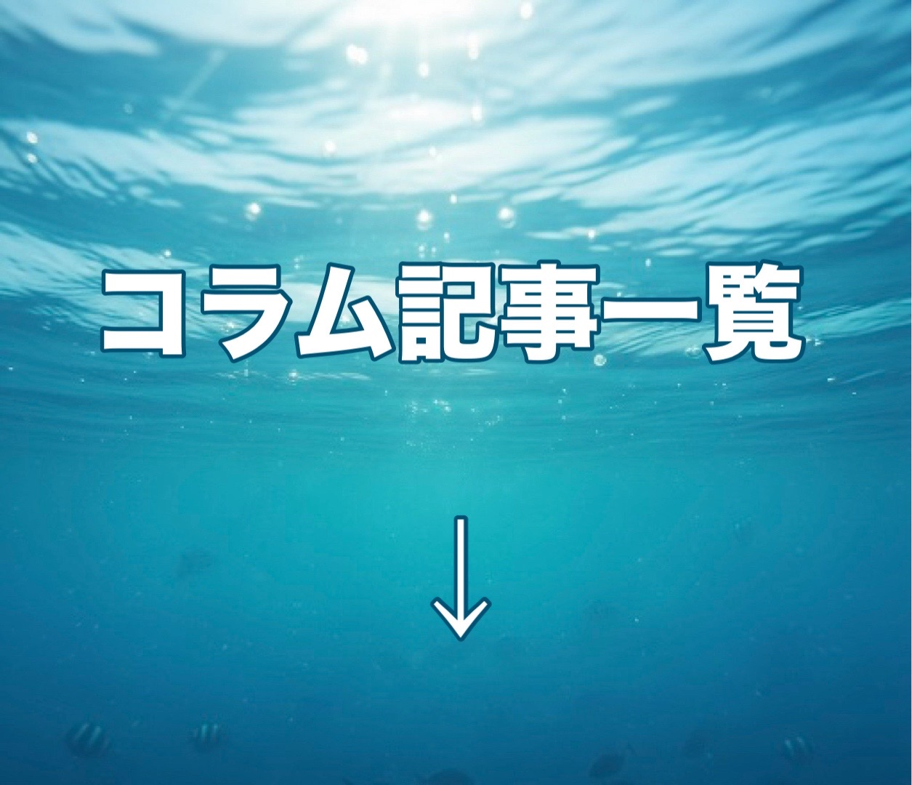
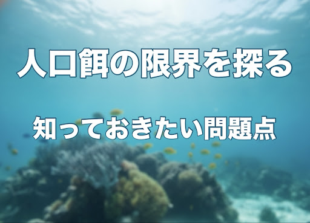
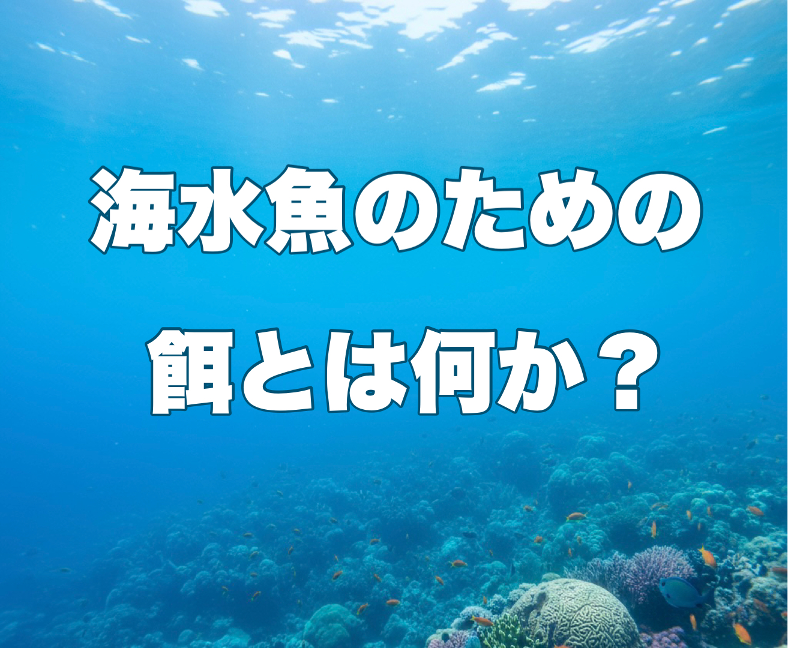
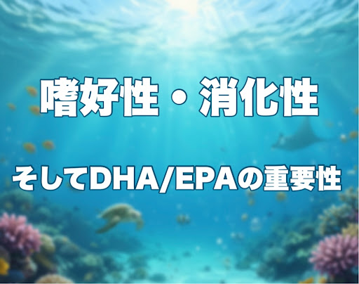
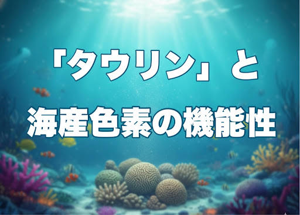

アクアリウムにおける様々な話題をコラムにまとめています。

Welcome to my homepage.
A collection of columns on long-term marine aquarium keeping.
since 2026
同じ志の方の一助になれば幸いです
アクアリウムにおける様々な話題をコラムにまとめています。


現代のマリンアクアリウムにおける「人工餌」の問題点を様々な側面から深堀りしていきます。

様々なトラブルの末、学びや試行錯誤を経て生餌中心の給餌に変換していった経緯を振り返ります。

嗜好性・消化性、そして必須脂肪酸であるDHA/EPAの重要性などの面から解説します。

必須遊離アミノ酸であるタウリンや、海産生物由来の機能性色素の役割について解説します。

天然型栄養素の優位性と腸内細菌叢への可能性を探ります。

生餌や冷凍餌の取扱によるリスク、安全に給餌するコツなどを伝授。

草食性の強い魚たちのための海藻粉・海苔・人工餌の活用

最高レベルの餌生物であるツノナシオキアミの栄養的魅力にせまります。